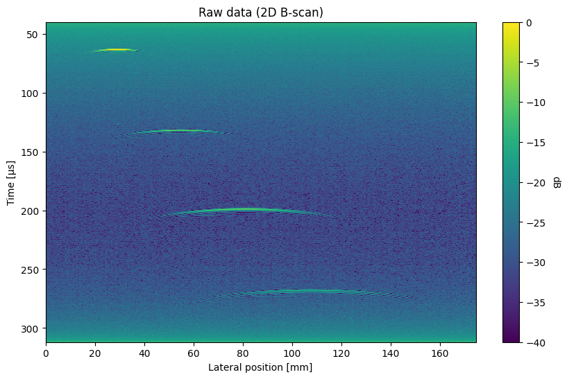
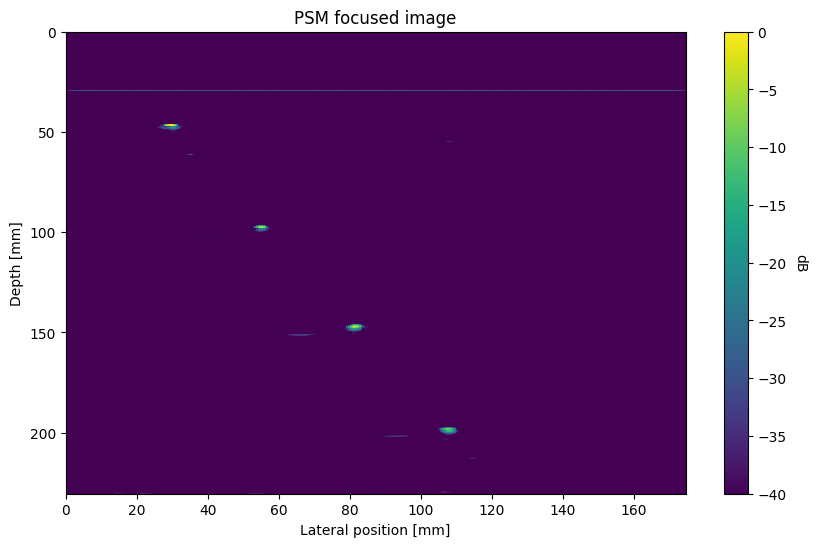

Introduction
Synaptus
Synaptus is a Python and Matlab/Octave toolbox for synthetic aperture and array imaging. It was originally developed for ultrasonic imaging for non-destructive testing, but can be applied for similar imaging modes (e.g. ground penetrating radar). The toolbox focuses on algorithms implemented in the Fourier domain, and on imaging in multilayered structures (e.g. water, metal, rock).
The core functionality of the toolbox is to create focused images from raw (unfocused) pulse-echo data. Such data is produced by a transducer that transmits waves into a propagating medium, and records backscattered waves from within the medium. A backscattered "echo" is created when the waves interact with an object or layer with different physical properties than the propagating medium, e.g. a metal object in water. A measurement at a single point in space thus produces a 1-dimensional "depth profile". By moving the transducer laterally relative to the object under study, it is possible to create a 2- or 3-dimensional image of the object. Due to the divergence of the transducer beams, the echoes from scattering objects are "smeared" laterally, making the images unfocused and hard to interpret (see example in "quick start" below).
The algorithms in the Synaptus toolbox take such raw, unfocused images as input and processes them to create focused images. Conceptually, this is done by treating the raw images as measurements of a wave field, and using the wave equation to manipulate the wave field into a focused image. The details of this process is described in the PhD thesis included in the toolbox.
Quick start
The example code below assumes that the synaptus Python package has been installed. It
follows the demo_psm_2d.ipynb notebook found under python/examples.
Import dependencies, the PhaseShiftMigration class, and utility functions for loading datasets and plotting 2D ultrasound images:
from pprint import pprint
import numpy as np
from scipy.signal import hilbert
from synaptus import (
PhaseShiftMigration,
load_mat_dataset,
plot_us_image,
)
Load an example dataset (included with synaptus):
The following dataset properties are printed:
UltrasoundDataset(raw_data=array([[ 9.97680625, 11.89522917, 10.30557292, ..., 10.86622708,
10.70336667, 11.66129167],
[11.13305625, 10.02022917, 10.93057292, ..., 11.69435208,
10.93774167, 9.89566667],
[11.11743125, 11.12960417, 11.63369792, ..., 10.67872708,
10.92211667, 11.28629167],
...,
[-2.92944375, -4.69852083, -3.56942708, ..., -3.54002292,
-3.56225833, -4.10433333],
[-3.77319375, -3.30789583, -1.94442708, ..., -2.88377292,
-3.26538333, -3.91683333],
[-5.00756875, -4.01102083, -4.55380208, ..., -4.57127292,
-3.12475833, -3.40120833]], shape=(6800, 350)),
fs=25000000.0,
x_step=0.0005,
y_step=None,
t_delay=4e-05,
f_low=0,
f_high=inf,
wave_vel=(np.float64(1480.0),),
layer_thick=(inf,))
The dataset consists of 350 ultrasound measurements ("A-scans"), each 6800 samples long. The time sampling rate is 25 MHz and the spatial sampling ("step size") is 0.5 mm. A measurement delay of 40 microseconds was applied from pulse transmission to start of recording. The data corresponds to a single water layer with wave velocity 1480 m/s, and unspecified thickness (not relevant for single layers).
Create a PhaseShiftMigration object, using some of the properties from the dataset, but overriding the f_low and f_high parameters (lower and upper edges of transducer passband). Initialization includes transforming the raw data to the Fourier domain.
# Create PSM object
psm = PhaseShiftMigration(
raw_data=mat_dataset.raw_data,
fs=mat_dataset.fs,
f_low=0.4e6,
f_high=2.5e6,
x_step=mat_dataset.x_step, # type:ignore
t_delay=mat_dataset.t_delay,
wave_velocities=mat_dataset.wave_vel,
)
Display the raw data amplitude (calculated using Hilbert transform), using the
plot_us_image utility function. The image scene contains 4 point scatterers (steel
wires) that have been laterally "smeared" into hyperbolas.
# Display raw data
plot_us_image(
np.abs(hilbert(psm.raw_data, axis=0)),
x_val=psm.x_vec * 1e3,
y_val=psm.time_vec * 1e6,
title="Raw data (2D B-scan)",
x_label="Lateral position [mm]",
y_label="Time [µs]",
min_db=-40,
figsize=(10, 6),
)

Then focus the data using phase shift migration:
... and plot the focused image, using the same utility function as above. Note the change of vertical coordinates from time to depth (mm).
# Plot focused image
plot_us_image(
images[0],
x_val=psm.x_vec * 1e3,
y_val=z_vecs[0] * 1e3,
min_db=-40,
figsize=(10, 6),
title="PSM focused image",
x_label="Lateral position [mm]",
y_label="Depth [mm]",
)
